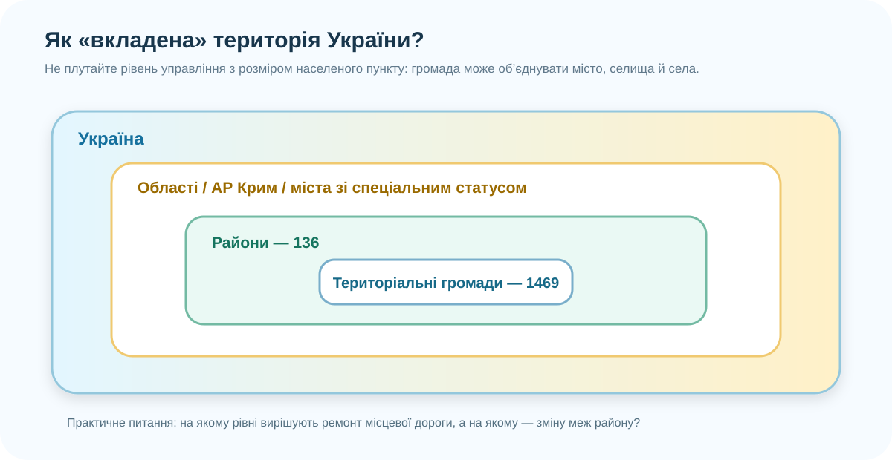

1. Бриф: навіщо взагалі ділити територію?
Ваше завдання — наприкінці уроку показати карту й довести, як треба організувати територію, щоб управління було не декоративним, а працювало.

2. Практична робота: читаємо адміністративну карту
Після реформи субрегіонального рівня 2020 року в Україні утворено 136 районів.
У країні створено 1469 територіальних громад. Це рівень, найближчий до щоденних місцевих послуг.
Крим — невід’ємна частина України. Тимчасова окупація не змінює міжнародно визнану територіальну належність АР Крим та м. Севастополя Україні.
Запорізьку область і визначте, з якими областями вона межує.
Що більше: район чи територіальна громада? Поясніть не за назвою, а за функцією.
Чому адміністративний центр громади не обов’язково є найбільшим містом району?
Джерела для перевірки: портал «Децентралізація» — райони; територіальні громади; Постанова ВРУ №807-IX.
3. Теорія після карти: хто за що відповідає?
Область
Регіональний рівень. Координація розвитку великої території, обласні програми, частина мереж регіонального значення.
Район
Субрегіональний рівень. Після реформи районів стало значно менше: 136 замість 490.
Територіальна громада
Базовий рівень місцевого самоврядування. Тут найближчі до людини рішення: місцеві дороги, комунальні послуги, частина освіти, благоустрій, місцеві програми.
4. Лабораторія: чи спроможна Ваша громада?
Нижче — спрощена модель. Вона не замінює офіційну методику, але змушує перевірити головне: чи може територія реально забезпечувати базові послуги.
Параметри умовної громади
Індекс спроможності
Змініть параметри.
Зробіть громаду великою за площею, але збільшіть відстань до центру. Потім поліпште дороги та послуги. Що сильніше змінює результат?
5. Головний проєкт: «Громада, яка працює»
Проєктний canvas
Ваше рішення
6. Захист за 60 секунд
Формула виступу
1. Наша територія…
2. Карта показує…
3. Головна проблема…
4. Ми пропонуємо…
5. Це зробить громаду спроможнішою, тому що…
Рубрика на 10 балів
+1 бал — за чесно названий ризик/компроміс. Максимум 10.
Claim: що робить громаду спроможною? Evidence: наведіть щонайменше два докази з карти/даних. Reasoning: поясніть причинний зв’язок.
7. Доробіть проєкт до версії, яку не соромно показати громаді
Базовий рівень
Опрацюйте §55 електронного підручника. Завершіть постер/3–4 слайди: карта + проблема + 2 докази + рішення + висновок.
Електронний підручник ↗Сильніший рівень
Порівняйте свою громаду з іншою схожою громадою на порталі «Децентралізація». Знайдіть одну практику, яку реально можна було б перенести.
База громад ↗